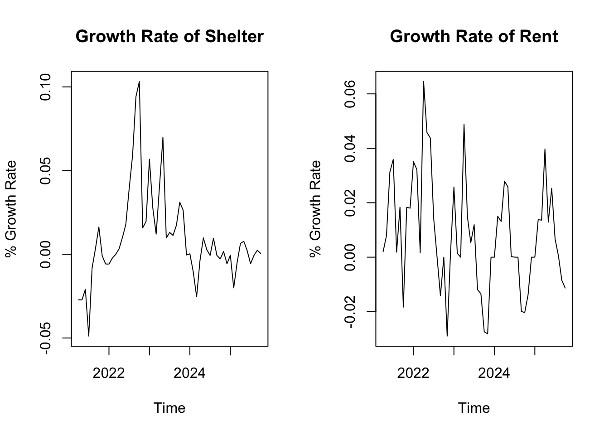
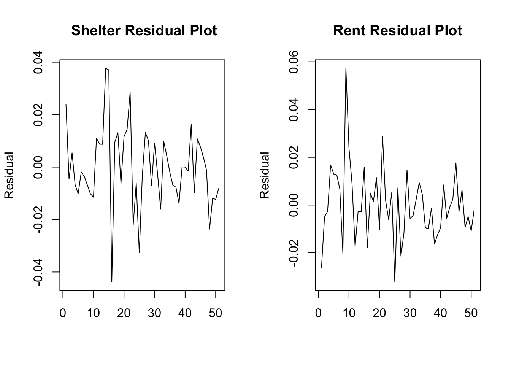
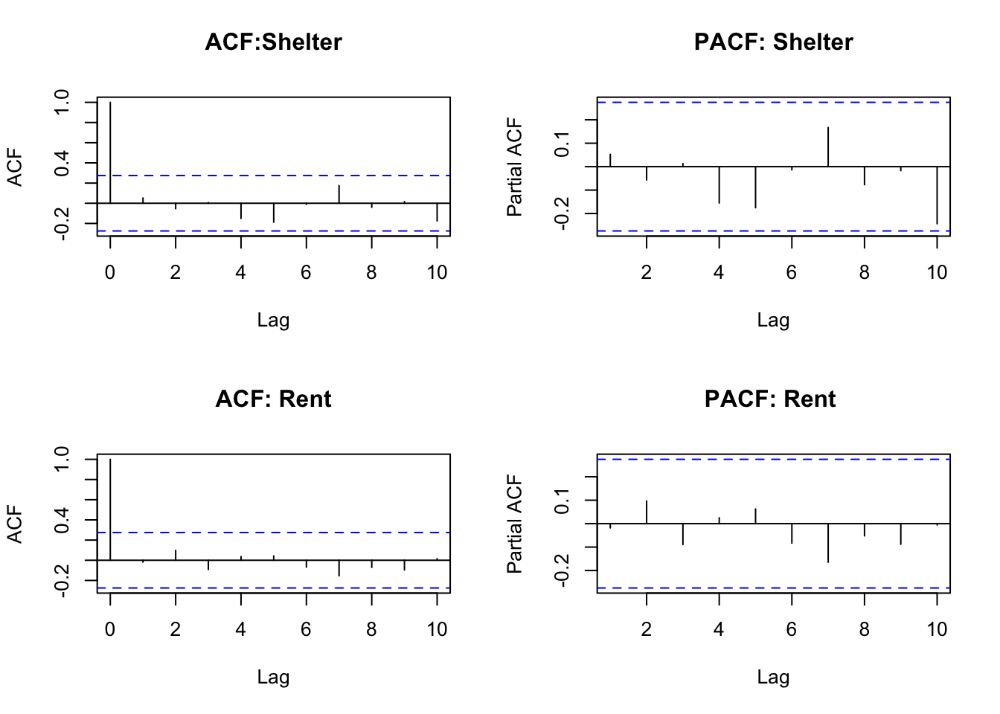
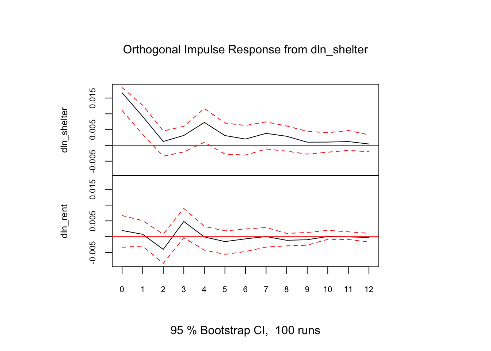
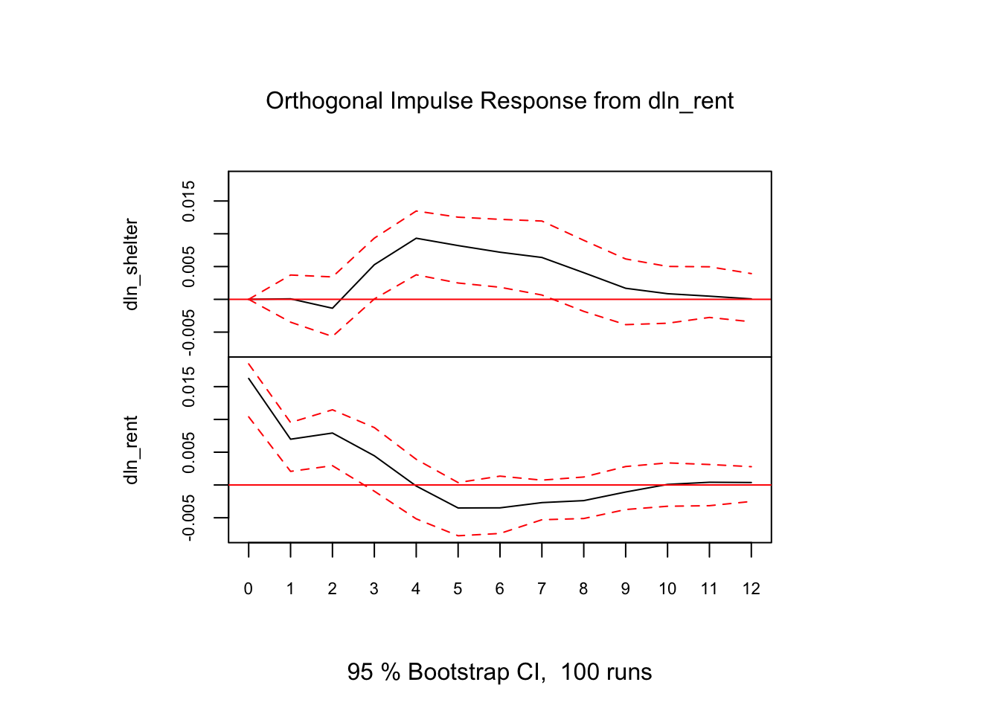
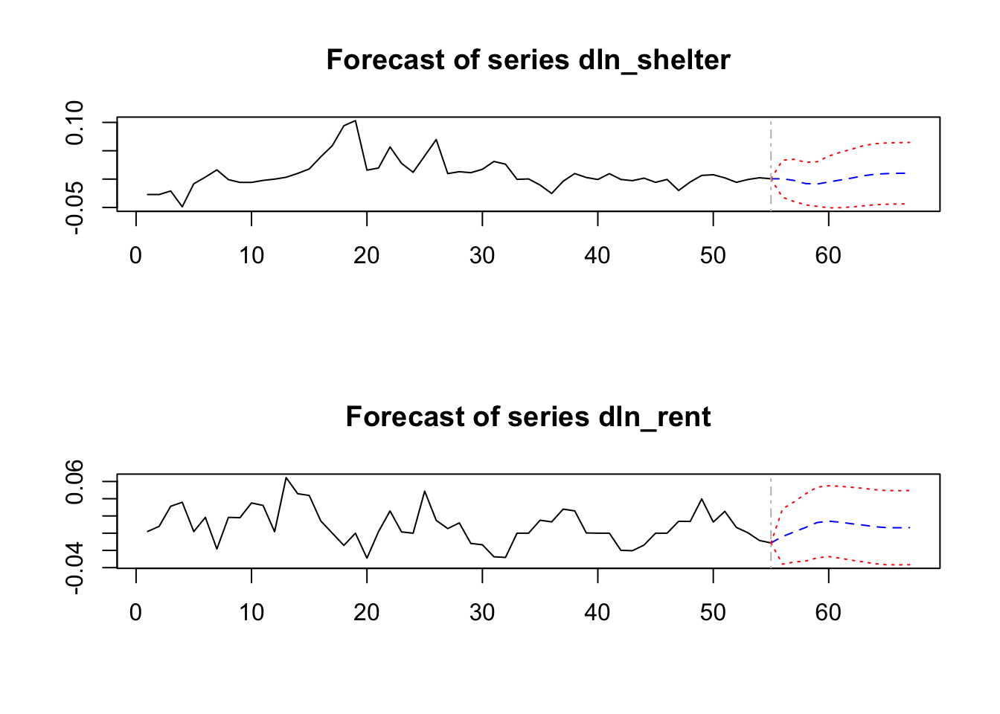
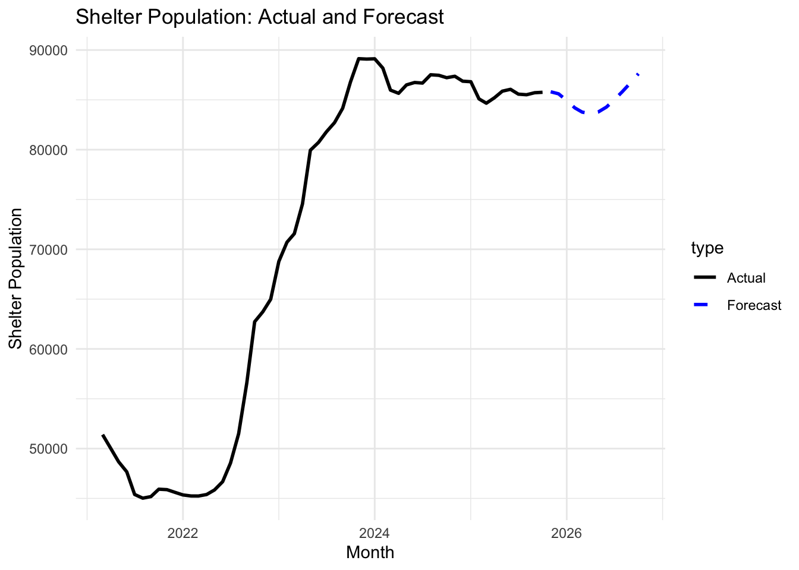
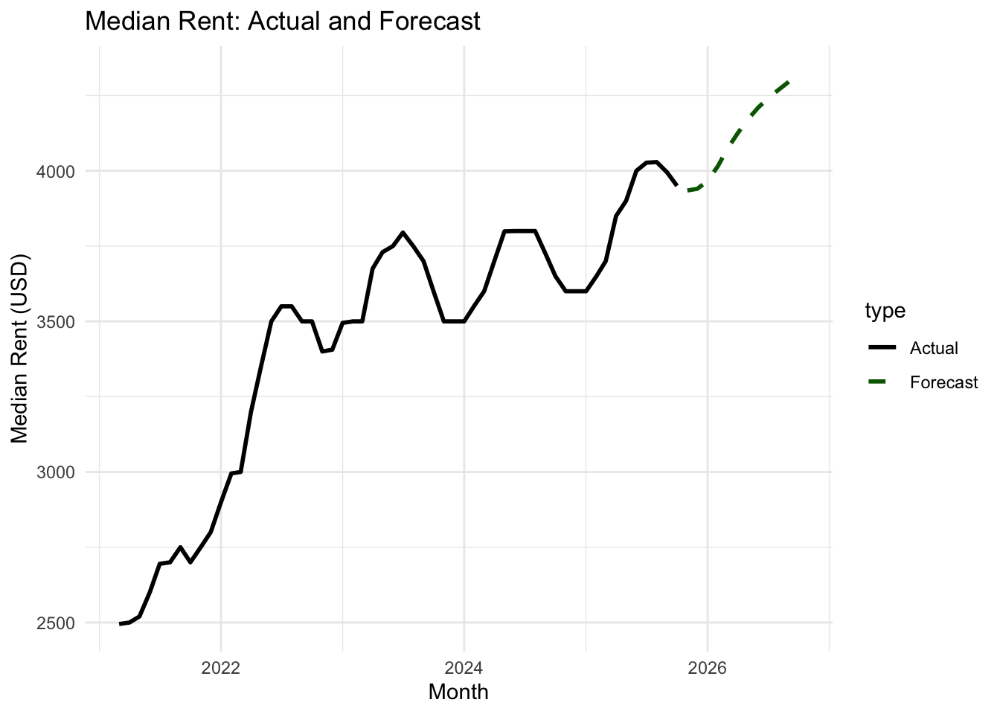

Shelter Population and Median Rent Over Time
Homelessness is one of New York City’s most persistent and structurally complex policy challenges. It has remained a central issue for successive governors, mayors, and political leaders, reflecting deep-rooted pressures in the city’s housing market and social safety net. Public discourse and empirical research have consistently linked homelessness to housing affordability, particularly rising rents, with higher rental costs often associated with increases in the number of individuals relying on shelter systems. Understanding the dynamic relationship between rental prices and shelter population is therefore critical for policymakers seeking to design effective housing and homelessness interventions.
This report conducts a detailed time-series analysis using a Vector Autoregressive (VAR) framework to examine the relationship between the monthly average shelter population and the median asking rent in New York City over the period from March 2021 to October 2025. The analysis explores how these two variables co-evolve over time and interact through their respective lag structures. In addition, the estimated model is used to generate forecasts for both variables over a 12-month horizon, from November 2025 to October 2026, providing insight into potential future trends in housing affordability and shelter demand.
The analysis relies on two primary variables: the monthly average number of individuals in homeless shelters and the median asking rent in New York City. While rental data are reported at a monthly frequency, the shelter population data are originally available on a daily basis. To ensure consistency across series, the daily shelter counts were aggregated to monthly averages.
Definition: Daily numbers of individuals & families living in Department of Homeless Services (DHS) shelters.
Source: https://catalog.data.gov/dataset/dhs-daily-report
the data has been aggregated to a monthly average level
Definition: The exact monthly median rent asked among all rental listings available on StreetEasy at any point during the month/quarter/year.
Source: https://tinyurl.com/yysmzxca
This section outlines the econometric framework used to estimate the VAR model and the diagnostic tests conducted to validate its assumptions. The objective is to model the growth rates of shelter population and median rent as functions of their own lagged values and the lagged values of the other variable.
Formally, the VAR system is specified as:
\[ Y_{1,t} = \alpha_1 + \sum_{i=1}^{p} \beta_{11,i} \, Y_{1,t-i} + \sum_{i=1}^{p} \beta_{12,i} \, Y_{2,t-i} + \varepsilon_{1,t} \]
\[ Y_{2,t} = \alpha_2 + \sum_{i=1}^{p} \beta_{21,i} \, Y_{1,t-i} + \sum_{i=1}^{p} \beta_{22,i} \, Y_{2,t-i} + \varepsilon_{2,t} \] Where,
\[ Y_{1,t} = \Delta \ln(\text{Shelter Population}_t) \]
\[ Y_{2,t} = \Delta \ln(\text{Median Rent}_t) \]
Stationarity is a prerequisite for valid VAR estimation and forecasting. Time series that exhibit trends or unit roots can lead to spurious regression results if modeled in levels.
Visual inspection of the level series Figure 1 in the Appendix indicates that both the monthly average shelter population and the median asking rent display trending behavior. Consistent with this observation, Augmented Dickey–Fuller (ADF) test results reported in Table 1 fail to reject the null hypothesis of a unit root for both series.
Applying logarithmic transformations does not resolve the non-stationarity. As shown in Figure 2 and confirmed by the ADF results in Table 2, the log-transformed series remain non-stationary.
However, taking first differences of the logarithmic series yields stationary processes. Figure 3 demonstrates stable behavior for both differenced series, and the ADF test results in Table 3 reject the null hypothesis of non-stationarity at conventional significance levels. Consequently, both variables are treated as integrated of order one, I(1), and the VAR model is estimated using first differences of the log-transformed series.
When multiple series are I(1), it is necessary to test for cointegration to determine whether a long-run equilibrium relationship exists. If such a relationship is present, a Vector Error Correction Model (VECM) would be more appropriate than a VAR in differences.
Johansen’s cointegration test was conducted using the log-level series. As reported in Table 4, the test statistic for the null hypothesis of no cointegration (r = 0) is 8.26, which is below the 5 percent critical value of 15.67. Therefore, the null hypothesis cannot be rejected, indicating no evidence of a stable long-run relationship between shelter population and median rent.
Given the absence of cointegration, a VAR model in first differences is appropriate, and a VECM specification is not warranted.
Since both series are I(1) and not cointegrated, a VAR model is estimated using the first differences of their logarithms. This specification captures short-run dynamics and interdependencies without imposing long-run equilibrium restrictions.
Optimal lag length was determined using information criteria, including AIC, SC, and HQ, as shown in Table 5. Based on the majority of criteria, the selected lag order is VAR(4).
The VAR(4) model was estimated with a constant term. Full regression results are reported in Table 6 of the Appendix. The estimated equations are summarized below:
\[ \begin{aligned} \Delta \ln(\text{Shelter})_t =\;& 0.5490\,\Delta \ln(\text{Shelter})_{t-1} + 0.0047\,\Delta \ln(\text{Rent})_{t-1} - 0.2178\,\Delta \ln(\text{Shelter})_{t-2} - 0.0881\,\Delta \ln(\text{Rent})_{t-2} \\ &+ 0.2254\,\Delta \ln(\text{Shelter})_{t-3} + 0.4075\,\Delta \ln(\text{Rent})_{t-3} + 0.1553\,\Delta \ln(\text{Shelter})_{t-4} + 0.2424\,\Delta \ln(\text{Rent})_{t-4} \\ &- 0.00066. \end{aligned} \]
\[ \begin{aligned} \Delta \ln(\text{Rent})_t =\;& -0.0054\,\Delta \ln(\text{Shelter})_{t-1} + 0.4296\,\Delta \ln(\text{Rent})_{t-1} - 0.2940\,\Delta \ln(\text{Shelter})_{t-2} + 0.3031\,\Delta \ln(\text{Rent})_{t-2} \\ &+ 0.5483\,\Delta \ln(\text{Shelter})_{t-3} - 0.0647\,\Delta \ln(\text{Rent})_{t-3} - 0.2996\,\Delta \ln(\text{Shelter})_{t-4} - 0.2730\,\Delta \ln(\text{Rent})_{t-4} \\ &+ 0.00479. \end{aligned} \]
To assess model validity and robustness, several diagnostic tests were conducted, focusing on residual behavior and autocorrelation.
Visual inspection of the residual plots Figure 3 suggests no systematic patterns, indicating the absence of heteroskedasticity or remaining serial correlation.
The Portmanteau test was applied to formally test for residual autocorrelation. As reported in Table 6, the test yields a p-value of 0.58, which is greater than 0.05. Consequently, we fail to reject the null hypothesis of no serial correlation, supporting the adequacy of the model specification.
Further confirmation is provided by the ACF and PACF plots Figure 4, where all autocorrelation coefficients lie within the 95 percent confidence bounds. These results indicate that the residuals behave as white noise.
Impulse response functions illustrate how a one-time shock to one variable affects the current and future values of both variables in the system.
Figure 5 shows that a 1 percent shock to shelter population growth has a persistent effect on itself, lasting approximately nine months and peaking in the fourth month after the shock. The same shock exerts a smaller and shorter-lived effect on rent growth, lasting around four months, with an initial positive response followed by a brief negative adjustment.
Figure 6 indicates that a 1 percent shock to median rent growth generates a delayed but positive response in shelter population growth, beginning in the second month and persisting for up to nine months, with the largest effect occurring in the fourth month. The impact on rent growth itself declines over time, turning negative after the fourth month and persisting for roughly ten periods.
Granger causality tests were conducted to examine whether lagged values of one variable improve the prediction of the other.
Results reported in Table 7 show that changes in median rent Granger-cause changes in shelter population, with a p-value of 0. Similarly, changes in shelter population Granger-cause changes in median rent, with a p-value of 0.01.
These findings indicate bilateral (feedback) Granger causality, suggesting that both variables contain predictive information about each other’s future movements.
Using the estimated VAR(4) model, 12-month-ahead forecasts were generated for both variables. Figure 7 presents forecasts of percentage changes, which were subsequently transformed back into levels for interpretability.
Table 8 reports the forecasted values for both growth rates and levels, while Figures 8 and 9 compare historical data with projected paths for shelter population and median rent. These forecasts provide insight into expected short-run dynamics in housing affordability and shelter demand, conditional on historical relationships.
This report developed and evaluated a VAR(4) model to analyze the dynamic relationship between monthly average shelter population and median asking rent in New York City. Using data from the Department of Homeless Services and StreetEasy, the analysis carefully addressed stationarity, cointegration, and model specification to avoid spurious inference. Diagnostic tests confirmed that the estimated model is well specified and free from residual autocorrelation.
The results reveal strong short-run interactions between rent growth and shelter population growth, including evidence of bilateral Granger causality. Impulse response analysis highlights the persistence and timing of shocks across variables, while the forecasts provide forward-looking insights into potential trends over the next year.
Overall, the findings underscore the tight and dynamic linkage between housing affordability and homelessness in New York City, reinforcing the importance of coordinated housing and social policy interventions to address shelter demand and housing market pressures simultaneously.
Shelter Population and Median Rent Over Time

Growth Rates of Shelter Population and Median Rent

Residuals Plots of VAR(4) Model

ACF and PACF of Residuals for Shelter and Rent



12-Month Forecasts from the VAR(4) Model

